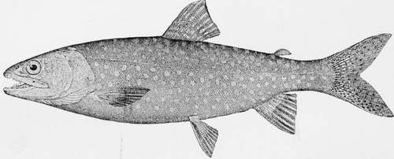

The Lake Trout. Part 2
Description
This section is from the book "American Game Fishes", by W. A. Perry. Also available from Amazon: American Game Fishes: Their Habits, Habitat, and Peculiarities; How, When, and Where to Angle for Them.
The Lake Trout. Part 2
"Did it ever strike you that trolling with a hand-line wasn't real sport? It is a good deal like towing on a canal, with a strong team of mules and a heavy line; the boat hain't got no chance. Neither has a fish, with two hands going one over the other, taking in string like a revolving drum. I used to do it, but I got ashamed of it. You don't get the sport out of a fish on a hand-line that you do with a light rod. A man doesn't get the credit for being a great fisherman because he brings home a boat-load of fish. Ask the boatman who pulls him around for his opinion of his man. It's either, 'he's a daisy,' or, 'he wanted all the fish in the lake.'"
Be generous with your opponent! let it be give and take; give him at least an equal chance with you; let him test to the full the spring of your slender rod, the strength of your delicate line, and the glittering vanity of the whirling spoon; and then, when you come forth proudly victor, as in sooth you will, if you are a true disciple of the gentle craft, there will be no tinge of regret in your rejoicings, nor suspicion of sordid motive attaching to your doughty deeds. And then, too, you will know, as then only you can know, how much of genuine sport there is in angling for this hardy prince of the hidden realms of Neptune. But I am not yet through with the prosaic part of my tale, and must fain detain you longer, oh patient follower of these lines, while I sketch for you, current'e calamo, some facts 'tis well to know, before we go a-fishing. And first, to quote from kindly Seth Green, of fragrant memory:
Lake Trout. Salvelinus Natnayaish.
"There are no fish which require a more uniform temperature of weather, and when they cannot have access in the warm summer months to the deep water-where the temperature is the same the year around, where it is not affected by any of the changes of the atmosphere in either winter or summer, death will ensue from suffocation.
"Many times in fishing for Salmon Trout in summer, when I have hooked a Trout in the deep water, he would come for a distance without much struggling, but as he neared the surface where the temperature began to affect him, he began to suffocate, and his struggling greatly increased."
Cheney says: "The Lake Trout inhabits only lakes containing deep, cold, clear water, and they are the first of all the Salmons to succumb in waters of high temperature. Seth Green made an experiment to determine this question, using California and Kennebec Salmon, California Trout, Grayling, Brook Trout, and Lake Trout. The Lake Trout died first, and before the mercury reached seventy-four degrees; the Brook Trout next, and then death ensued in the following order: the Grayling, the California Trout, the Kennebec Salmon, and, last, the California Salmon."
This characteristic of the Lake Trout will account for the fact that in all save the Great Lakes, fishing for him is cither confined to a limited time in spring and fall, when the surface water is very cold, or else the tackle that is used must be such as will take him at a depth of from forty to eighty feet, whereby the element of sport is largely eliminated from the act of fishing.
The time of spawning of the Lake Trout is in the middle fall, when they leave the deep recesses of the lakes, to seek the shoals for this purpose. The proportion of spawn deposited is said to be about 2,000 ova for every pound in weight of the female. The same uncertain chance attends the hatching of the eggs as is seen in the cases of so many other fish. If they escape the eyes of other spawners, it is only to fall a prey in large numbers to the hungry and greedy prowlers that are always on the lookout for just such delicious bonnes touches. Once past this fateful time, however, the Namaycush grows lusty and strong, and increases so mightily in size and weight as almost surpasses belief, although his average weight is only about six pounds. In the Great Lakes, the captains and mates of the schooners that trade from port to port give startling records of catches made from the decks of their vessels, and prove them by the fish. Thus Mr. Cheney reports that in 1882 his brother saw on the deck of a schooner at Muskegon, Michigan, nine Lake Trout, the smallest of which weighed eighteen pounds. (I thank thee, O Cheney, for leaving to the glorious uncertainty of conjecture the weights of the other eight!) The same writer is authority for the statement that Dr. E. Sterling of Cleveland, Ohio, saw a Lake Trout taken at Thunder Bay, Lake Huron, that weighed seventy pounds. My own companion of the yachting trip, described later in this paper, "the captain," on one of his trips caught a monster, horresco referens, so great as to defy description! I can only report that he encased him tenderly in icy bands of swathing, and sent him to the steward of his club here in Chicago, with a preceding note of explanation that he sent him "a fish" for the club; whereat the lordly steward tossed high his head, and curled his patrician nose in scorn at thought of "a fish" supplying even for a single day the gastronomic wants of his many guests. Yet tradition has it that there was enough and to spare, so that perchance even the minions had taste of this wondrous fish. The record of the smaller lakes also shows numerous well authenticated cases of fish caught that weighed from twenty-five to forty pounds.
The food of our Mackinaw friend is varied. He is not over-scrupulous, yet he has a leaning to nice, juicy, tender young White-fish, while not despising the grosser pabulum that frisks from time to time invitingly before him. He is withal a good hearty eater, which is much to his credit, and in our favor. It is not uncommon for a Trout to swallow a fish nearly as large as himself.
As regards the gameness of our subject, much has been said on both sides. He has been persistently vilified by some, and as earnestly championed by others. I am glad to see that Mr. A. N. Cheney, than whom I know of no more practical expert, in all matters pertaining to this fish, classes him as distinctly a game fish. I cannot do better than to quote his own words:
Continue to: